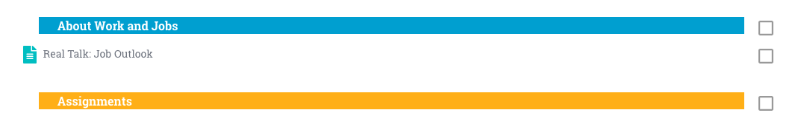
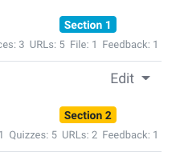
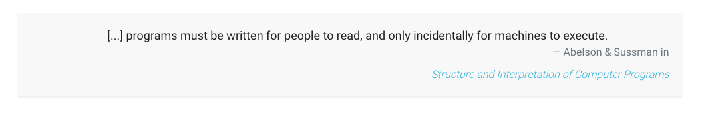
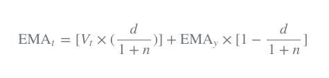
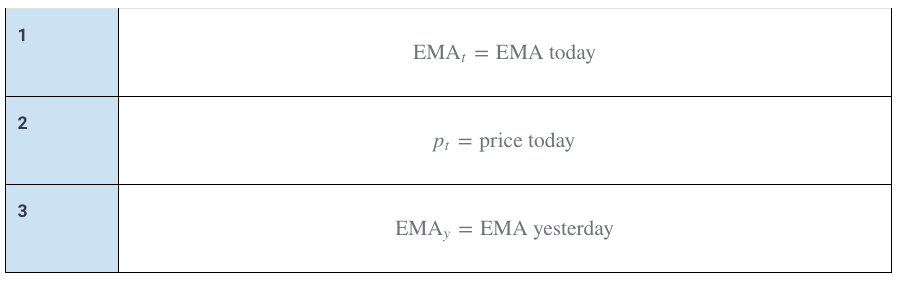

Consistently Styled Course Content¶
Note: Use Markdown to create your course content. It will make most of the below information irrelevant to you. If you feel the need to style more individually, use Bootstrap classes. Bootstrap is included in the theme we're using. Only if neither fulfills your creative urges, read on for more fine-grained styling.
Objective¶
We want unified and adaptable styling across all courses on the whole site.
- Simple: Simple elements are favored over complex ones, because they are easier to set up and maintain
- Reusable: Allow Bootstrap to style your page, it's already included.
- Maintainable: Through consistent and simple structure, we can adapt styles centrally and avoid unnecessary effort and potential misalignment
Therefore, we ask you to use simple HTML (e.g. through using the Markdown editor or the WYSIWYG editor) and customize the resulting HTML only minimally, with the following custom components:
Custom Components¶
Additional custom components you can use when creating and editing courses.
Course Overview Page Additional Styling¶
The following adaptations should be used to make the course overview page styled consistently and easier readable for students.
1. Section Dividers¶
To improve the visual flow in a course overview, you can add colored bars to break up the course content.

Section Dividers: These can be used to sub-divide a larger section and give it a relevant sub-section heading. Create a "Tag Resource" on the platform, and add the following HTML code in the HTML editor:
<h5 class="section-divider">Section Mini-Heading</h5>
Assignment Dividers: To indicate to students that the following materials require their own input, we use differently-colored dividers for a section that consist of instructions for mini-projects, quizzes, etc. You can create such a divider also using the "Tag Resource" and entering the following HTML code in the HTML editor:
<h5 class="section-assignment">Assignments</h5>
2. Section Tags¶
Section tags in the "Summary" of each section help students stay on track and visually bundle multiple sections logically together.
Switch off blue and yellow tags for better visual grouping.
Blue:
<div class="d-flex flex-row-reverse">
<span class="badge badge-pill badge-info">
Section 1
</span>
</div>
Yellow:
<div class="d-flex flex-row-reverse">
<span class="badge badge-pill badge-warning">
Section 2
</span>
</div>

Page Resources Individual Styling¶
The following custom style elements should be considered when creating written documentation for your course content.
Headings¶
In the visual editor, use editor-provided headings levels:
- "Heading (large)" option creates
<h3>element - "Heading (medium)" option creates
<h4>element - "Heading (small)" option creates
<h5>element
Don't apply any editor styles to your headings. We want to avoid individually bolded headings. Avoiding individual styles allows us to increase heading size, font-weight, etc. centrally through SCSS.
In Markdown, use the equivalent heading levels that the visual editor uses:
- Top-level heading:
### - Second-level heading:
#### - Lowest-level heading:
#####
Information And Alert Boxes¶

Use the Bootstrap alert box alert alert-warning for criticial information and gotchas. E.g.:
"Just read over this for now, we'll dig deeper into it in a later section."
<div class="alert alert-warning" role="alert">
<strong>Note:</strong> Take care to avoid xyz.
</div>
Use alert alert-info to include additional information e.g. on external resources that can lead students further onwards. E.g.:
<div class="alert alert-info" role="alert">
<strong>Info:</strong> The first bug was a real bug!
</div>
The Bootstrap alert boxes also help to visually break up a long piece of content by highlighting an important section.
Note: If you need to use multiple lines in your alert boxes, use <br> tags to create newlines (instead of using <p> tags). This results in nicer-looking alert boxes without additional spacing.
Code Blocks¶
Wrap code snippets into triple-backticks. This works both in Markdown as well as the visual editor:
```
print("your code here")
```
Note: Syntax highlighting can sometimes be broken. This might be annoying and we hope to find a fix that'll solve it site-wise.
In-line Code¶
In Markdown, simply wrap your in-line code into single backticks.
In the visual editor, there is no button for marking a section of text as inline code. Therefore, you will need to switch to the HTML editor and wrap in-line code snippets into <code>your_code()</code> tags.
Embedded Resources¶
For external videos that are not hosted on our vimeo account and e.g. external code playgrounds, use Bootstraps responsive embed class:
<div class="embed-responsive embed-responsive-16by9">
<iframe class="embed-responsive-item" src="your_embed_url" allowfullscreen></iframe>
</div>
Resources¶
<div class="jumbotron resources">
<h1>Resources</h1>
</div>
Paste the above HTML snippet into the HTML editor of your resource. Next, switch back to the WYSIWYG editor view and copy-paste your resource links into the body of the jumbotron. Style them as a bullet point list. Result:

Quotes¶
To highlight a section of your documentation as a quote, please use the Bootstrap-provided blockquote HTML:
<blockquote class="blockquote text-right">
<p class="mb-0">[...] programs must be written for people to read, and only incidentally for machines to execute.</p>
<footer class="blockquote-footer">Abelson & Sussman in <a href="https://mitpress.mit.edu/sites/default/files/sicp/full-text/book/book-Z-H-7.html#%_chap_Temp_4"><cite title="Structure and Interpretation of Computer Programs">Structure and Interpretation of Computer Programs</cite></a></footer>
</blockquote>
We are applying some custom CSS to it to make the quotes look like shown below:

LaTeX¶
If you want to use LaTeX to display formulas, the Marklar Markdown editor only supports LaTeX blocks:
$$content$$
E.g. in order to display the following formula correctly rendered like so:

You can write the following in the Marklar editor:
$$\text{EMA}_{t}=[V_t \times (\frac d {1+n})] + \text{EMA}_y \times [1 - \frac d {1+n}]$$
For more information, refer to the LaTeX docs.
Note: If you need to use a couple of single-line LaTeX in a row, e.g. for explaining the contents of a formula in more detail, we suggest to use a Bootstrap table for easier viewing, e.g.:
<table class="table">
<tbody>
<tr>
<th scope="row">1</th>
<td>$$\text{EMA}_t=\text{EMA today}$$</td>
</tr>
<tr>
<th scope="row">2</th>
<td>$$p_t=\text{price today}$$</td>
</tr>
<tr>
<th scope="row">3</th>
<td>$$\text{EMA}_y=\text{EMA yesterday}$$</td>
</tr>
</tbody>
</table>
Renders to:
